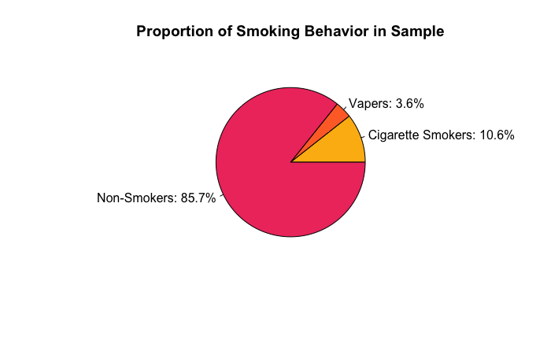

Social Justice Project: How is it to be a smoker in US?
Author: Libero Favi
Course: Elementary Stats, Prof. Fitzpatrick
Date: 05/12/2025
0.1 Abstract
This project explores smoking behavior in the United States through the lens of social justice, using 2023 data from the CDC's National Health Interview Survey. We estimate the smoking population, including cigarette and e-cigarette users, to be between 13.73% and 14.78%, or over 46 million individuals. Statistical analysis confirms a continued decline in cigarette use from 11.6% in 2022 to 10.6% in 2023 (p < 0.001), while also indicating the rising importance of alternative nicotine products.
Using hypothesis testing and confidence intervals, we identify subgroups disproportionately affected by smoking: 16% of smokers are disabled, 8.7% experience food insecurity, and over 10% are veterans. In contrast, Hispanic individuals exhibit significantly lower smoking rates. These findings suggest a pattern where smoking prevalence correlates with social vulnerability and economic marginalization.
We conclude that smoking in the U.S. is not merely a personal health issue but reflects broader structural inequities. Ethical public health policy must move beyond stigmatization and consider tailored interventions for marginalized populations, including disabled individuals, veterans, and those facing economic hardship. Limitations include reliance on self-reported survey data and insufficient measurement of vaping and newer nicotine alternatives such as nicotine pouches.
1.1&2 Rationelle
This research explores the portrayal and public health impact of smoking in the U.S., situating the issue within the framework of social justice. Classical philosophy provides a foundational lens for this discussion. According to Plato, justice in a state is achieved when "each class (rulers, auxiliaries, producers) fulfills its role without interfering with the others." While adult tobacco use might seem like a private matter under this logic, the broader social consequences demand public concern.
Socrates further defines justice not as the pursuit of individual happiness, but as the harmonization of the community:
"The law is not concerned with the special happiness of any class in the state, but [...] harmonizing and adapting the citizens to one another by persuasion and compulsion [...] with a view to using them for the binding together of the Commonwealth.”(Socrates)
This insight is particularly relevant to the tobacco industry. It historically prioritized profit over communal welfare, often through manipulative marketing and misinformation. Especially egregious was the targeting of children—a class with limited autonomy and heightened vulnerability. Marketing tobacco to youth not only interferes with public health goals but sacrifices one generation’s future for another’s profit, violating intergenerational justice.
From a social justice standpoint, we confront a conflict between public health agencies and private industries. The latter have introduced avoidable harms into the societal fabric, disproportionately affecting marginalized and underprotected populations (e.g., low-income families, racial minorities, and youth). Children lack the informed agency that Plato attributes to adult producers in his ideal city; thus, enabling their exploitation by tobacco interests represents a civic failure.
Framing smoking through this philosophical and ethical lens highlights why it is not merely a personal health issue but a structural one. Just as the AI labor displacement issue raises concerns of reintegration and protection of vulnerable groups, smoking too becomes a mirror of society’s capacity—or incapacity—to safeguard its most at-risk citizens.
On a good note, we see a steady decline in smoking rates across the US population. Supposedly the massive anti-smoking campaigns worked efficiently. Tobacco industry received colossal backlash from society, which size can be compared only to their financial gains. However, even those campaigns were not shy of spreading false information or dramatisation. These anti-smoking campaigns face some criticism, especially in the ethicality of their means to achieve their goals. Inevitably with such a zealous effort in anti-smoking campaigns led to stigmatization of smokers. Which is a borderline social justice issue as well, how can we help people whom we reject to listen.
Today, we see a rapid increase in cigarette substitutes, promoted as safer options and capitalizing on those claims. Even if those claims are not always scientifically proven and are sometimes cases of mere speculation. Introduction of those substitutes, such as vapes and nicotine pouches; led to a legislative gap, resulting in lack of regulation on new markets. Legislative gap, big tobacco corporation sluggishness and lack of regulation introduced many small manufacturers to the market. Working with such dangerous substances as Nicotine and unregulated flavour additives, introduces even more potential danger in those products.
These new alternatives may also offer attractive flavours, produce less smoke and more discretion. This has proven to be especially appealing to young adults, resulting in a spike in smoking in schools. This is a disruptive issue, lacking intense distinct cigarette smoke smell or burning products recognised by smoke detectors, it becomes significantly harder for school staff to identify smokers. FDA reports as much as 8.1% of high school students report currently smoking. Which is a decline from year before, but it is reasonable to question the reliability of self-reporting data in high school students. Some sources, based on interviewing teachers, don't believe FDA rates, and suggest that actual rates are much higher.
The point was that the issue is alive, even if it appears to be less significant than before. We cannot answer all the questions from above, however, we can bring some attention in order to bring more awareness to the issue. This is why the topic of this research is study of the underrepresented group of smokers, which is social justice.
“The only thing necessary for the triumph of evil is for good men to do nothing.”(Edmund Burke)
1.3 Research Question
Given the volume of the issue, we can only answer some questions. During our research, we’ve encountered a lack of publicly available estimation of the population of smokers. This is a very high-level and important metric. We will simply use our data to compare proportions of smokers to non-smokers. Additionally, we will test whether 2023 continued the old trend of decline in smoking rates from 2022.
Another high-level metric we can use is overall clinical image of a smoker, this is a mere description of major risks involved in smoking using chi square. The purpose is to have an image of the health consequences.
Additionally, we tackle some popular beliefs. We’ve heard people saying something like “ I work 14 hours at the mill and need to relax [with a cigarette]”. Implying that smoking is a psychological relief. Smokers are supposed to have a better happiness score based on this claim.
Another popular belief is encapsulated in “It will give me cancer at 80, I don’t care, who wants to live to 90”. Based on our clinical image, smokers associated health issues should not prevail by the age of 80. We give some discount to this extreme opinion and will test whether smoking associated issues manifest before the age of 60.
To put it into the list:
Population of smokers in 2023.(1.1)
Does it decline?(1.2)
Clinical Image of the smokers.(2.1)
2.1 Data Sources
We are using National Health Interview Survey (NHIS) data designed by the CDC’s National Center for Health Statistics (NCHS) conducted in 2023. In this study we use only adult population survey data as well as only public access variables. This is our only source of data for conduction of our statistics.
Dataset consists of 25000 (n=25000) samples with more than 400 variables. It is hard to estimate how many variables we have precisely, as some of them are computed based on other variables. Also, we cannot estimate exactly what variables are behind restrictions and we don’t have access to them. Dataset overview shows 600 variables, with most of them being unique and real, we will use only X of them in our study. More about this in methodology.
The raw data and metadata can be found on CDC website at 2023 NHIS webpage. As well as handbooks with more details on data collection, variables identification and other supplemental material. We will be using subsets of data, all data manipulations will be covered in methodology and are readily available in supplement1.RMd on google drive.
2.2 Type of Study
This is a cross-sectional, observational statistical analysis that combines descriptive and inferential methods. We compare proportions, build confidence intervals, use hypothesis testing and chi square. Its goal is to produce a general overview of the issue and highlight some of the problems in the smoking population domain. The study aims to inform public awareness campaigns and spark critical conversations around smoking-related health perceptions and behaviors.
2.3 Bias
We will encounter a lot of bias in this study. Giving the broadness of research it is challenging to account for all the bias. We will not segment our data deeply, but we account for it in terms of recognising inaccuracy of our results that are likely to diverge from the real population. For example we count as smokers all people who smoked at least 100 cigarettes. Meaning that we blend heavy smokers and people who smoked 101 cigarettes 40 years ago together, directly impacting accuracy of our smoking health related issues analysis.
Another source of bias is for example life-satisfaction level, which is hard to measure and thus we must be at least somewhat sceptical in any results regarding this topic. And of course surveys themselves inherently are prone to bias, because they rely a lot on personal self-assessment. As mentioned before, smokers themselves are stigmatised and so this should reflect on data in the ways we cannot account for.
Author's personal bias comes from the fact that I am directly impacted by the issue, being an active smoker may impact my interpretation. However, it is also a driver of this research. Recognising my bias, this is why I decided to do this research in the first place, an attempt for critical analysis of issues I face and millions of others like me.
2.4 Lurking Variables
The most important confounding variable is to recognise the arbitrary relationship of smoking to all of the other variables. It requires separate study for each and every variable to test whether smoking is associated with the studied variable x. For example it requires a separate study to figure out if smoking affects happiness, or people smoke because of happiness. These issues are way beyond our scope, that's why we don’t make any claims in regards to this.
Smoking has proven to be a direct cause of only a few issues, most of them are dependent on many other factors such as environment, wealth and social status. Any claims must acknowledge that even if some association exists, smoking may or may not be the biggest factor. For each variable explored (e.g., life satisfaction, presence of health issues), there may be multiple overlapping influences, many of which are outside the scope of this study.
3.1 Population Overview
Many official sources claim that smoking rates have been decreasing for decades in the US. CDC official estimate is 11.6% by the year of 2022. This number comes from the count of cigarette smoking now (CIGNOW_A) and if a person ever smoked more than 100 cigarettes (SMKEV_A). CDC’s estimate doesn't account for the e-cigarette smoking population in their estimate, lowering the overall population of nicotine based products consumers. Their survey includes ECIGNOW_A.
CIGNOW_A is a categorical variable, where surveyed answers question how often they smoke: (1) daily, (2) some day, (3) not at all, (7) refused, (9) don’t know. We filter as smokers people who answered 1 or 2.
SMKEV_A is another categorical variable, answering the question “Have you smoked at least 100 cigarettes in your ENTIRE LIFE?” with options: (1) Yes, (2) No. CDC in their estimate uses this variable, but we do not. We doubt there is a significant factor compared to smoking daily or some day from CIGNOW_A.
ECIGNOW_A is similar to CIGNOW_A asking how often a surveyed person smokes electronic cigarettes: (1) daily, (2) some day, (3) not at all, (7) refused, (9) don’t know. We filter as combined smokers people who answered 1 or 2. We are avoiding overlap as each sample must qualify only for one condition to be included.
3.1.1 Methodology
First we want to test whether the trend of cigarette smoking population continues with decline using the Hypothesis Test (HT) with alpha of 0.01.
Our Null Hypothesis is provided by CDC and equals 11.6% in 2022. To align with the trend, cigarette smoking proportion must be less than 11.6% in 2023. Alternative hypothesis is that cigarette smoking proportion had neither increased or stayed the same.
To conduct our hypothesis we need to compute Standard Error (SE) for a single proportion. Having SE we can compute Test statistics, comparing how much our calculated proportion deviates from the one provided by null hypothesis, effectively obtaining z statistics. Afterwards we will plug computed z statistics into the normal distribution curve to obtain p-value and determine whether our results are statistically significant.
Next in this segment we want to take into account the broader spectrum of smoking population by including electronic smoking devices consumers and build a Confidence Interval (CI). By incorporating the ECIGNOW_A variable. Additionally we use CI to 99% to increase our spread and get a better estimate.
We start by finding SE for CI, measuring spread in our sample proportion. To use it in our Margin of Error calculation, which requires z*. Given our CI = 99%, z* is 2.58. After we compute ME we can estimate CI by adding and subtracting margin of error from our sample parameter.
3.1.2 Theoretical Statistics
n = 29522
P-value = 7.102465e-08, overwhelmingly less then α, this is a statistically significant evidence against the Ho. Thus reject the null and confirm that smoking cigarette rates continued to decrease from 2022 to 2033, from 11.6% to 10.6% respectively.
It has been proven true that cigarette smoking population continued to decline. But we want to see overall smoking population, meaning including e-smoking population combined with cigarette smokers. Now we will build CI for both of this population, to capture smoking population more inclusively. To be more inclusive and try to attempt to account for other forms of smoking as hookah and nicotine pouches we will use CI of 99%. z* = 2.58 accordingly.
By combining cigarette and e-cigarettes together, on 99% Confidence Interval. We are 99% sure that the true smoking population is between 13.73% and 14.78%. It is true that CDC in their own report account as smoking only smoking cigarettes, yet we cannot disregard the fact how smoking moves from traditional rolled leaf tobacco to electronic devices. Population of electronic device smokers increased smoking population twice, now we see that quater of US population is smoking.
3.1.3 Description of Findings
CLT is well met, with our sample size of 25000. We found SSE evidence against the null, meaning we can confirm the continuation of decline in cigarette smoking rates to decrease from 2022 to 2033, from 11.6% to 10.6% respectively. More than 100 people in a 1000 identify themselves as active smokers in the US, ranging from daily smoking to some day.
We pushed our investigation further by trying to estimate the overall population of nicotine smokers in the US. We had merged cigarettes and e-cigarettes smokers together and built a CI. We are 99% sure that the population consuming nicotine based products is between 13.73 and 14.78 percent. This result had raised suspicion, as it contradicts the belief that e-cigarettes are widely replacing traditional cigarettes. It is better shown on this chart:

We can see that based on this data describing the chart, vaping is almost 3 times less common than traditional cigarettes. This makes us question whether this is true or not, it may be the systematic error in the survey or less self-perceivable habit, resulting in interfering with the CDC data.
3.2 Social Image
Given the large dimension of the dataset, we constrain our analysis by determining other potential variables of interest. The test on how we obtained those variables is entirely executed through R and all the details can be found in the supplement Rmd file. Given uncertainty in our method of finding this variable, it is fair to assume they’ve been eyeballed. Meaning there might be more variables we missed. Also, only variables that meet CLT restriction are taken into account.
We identified many variables of our interest that can tell us more, listed in decreasing statistical significance order. Many variables are excluded for various reasons, such as being support variable for other variables, repetition of already listed variable and etc:
COPDEV_A — Chronic obstructive pulmonary disease.
LEGMSTAT_A — Legal Marital Status.
ARTHEV_A — Ever had arthritis.
HYPEV_A — Ever had hypertension.
SOCWRKLIM_A — Work limited to health problems.
AFVET_A — Ever active military duty.
CHLEV_A — Ever had high cholesterol.
HISP_A — Hispanic Ethnicity.
DEPFREQ_A — How often depressed.
DEPEV_A — Ever had depression.
MIEV_A — Ever had a heart attack.
DISAB3_A — The Washington Group Short Set Composite Disability Indicator.
LSTATIS4_A — Life satisfaction.
URBRRL — Rural Index.
PHQ2SCREEN_A — PHQ-2 Screening Result.
FDSLAST_A — Frequency of food didn't last (had not enough food and unable to buy more).
CENEV_A — Ever told you have cancer.
STREV_A — Ever had a stroke.
We rule out 5 variables of the most interest to us: marital status, active duty veterans, hispanic origin, disability, and having not enough food. We will manually do hypothesis test for those variables and then build CI for these groups to determine their proportion to the US smoking population.
3.2.1 Methodology
We separate data into 2 subset, smokers and non-smokers. We accept as a smoker only people who answered SMKNOW_A (smoking now) question with 1 or 2, smoking everyday or some days. Non-smokers are defined as people who did not smoke more than 100 cigarettes ever (SMKEV_A = 2). We are dropping previously used variables of people who ever smoked more than 100 cigarettes and focusing only on current smokers. By doing so we obtained 2 datasets, chi_smokers (n=3135) and chi_non_smokers (n=18111). CLT is met for any analysis we would need to perform. We will examine formulas on examle of disabled group.
Disabled:
H0: PSmokingDisabled = PNSmokingDisabled
Ha: PSmokingDisabled ≠ PNSmokingDisabled
Estimate p-value using normal distriburtion and calculated z, we obtain p-value of 1.676185e-40. We reject the null, smoking is disproportional in disabled group.
We had streamlined the process and used the following code to analyze the variables. Each separate implementation can be found in the Rmd file.
Code Chunk: Two-Proportion Hypothesis Test (DISAB3_A — Smokers vs Non-Smokers)
# Filter individuals who reported FDSLAST_A == 1 in both groups
dummy_group1 <- chi_smoker %>%
filter(DISAB3_A %in% c(1))
dummy_group2 <- chi_non_smoker %>%
filter(DISAB3_A %in% c(1))
# Calculate sample proportions
p_dummy_group1 <- nrow(dummy_group1) / nrow(chi_smoker)
p_dummy_group2 <- nrow(dummy_group2) / nrow(chi_non_smoker)
# Get counts and group sizes
x1 <- nrow(dummy_group1)
x2 <- nrow(dummy_group2)
n1 <- nrow(chi_smoker)
n2 <- nrow(chi_non_smoker)
# Compute pooled proportion
p_pool <- (x1 + x2) / (n1 + n2)
# Calculate standard error using pooled proportion
SE <- sqrt(p_pool * (1 - p_pool) * (1 / n1 + 1 / n2))
# Calculate z-statistic
z <- (p_dummy_group1 - p_dummy_group2) / SE
# Calculate two-tailed p-value from standard normal distribution
p_smk <- 2 * pnorm(-abs(z))
CI were estimated with code below, precisely copying the process showed in section 3.1.2.
Code Chunk: 95% Confidence Interval Calculations for Single Proportion (DISAB3_A - Smoking)
# Filter Hispanic individuals from the smoking population
dummy_group1 <- chi_smoker %>%
filter(DISAB3_A %in% c(1))
# Proportion of Hispanic origin among smokers
p_dummy_group1 <- nrow(dummy_group1) / nrow(chi_smoker)
# Standard error for the proportion
SE <- sqrt(p_dummy_group1 * (1 - p_dummy_group1) / nrow(chi_smoker))
# Margin of error using z* = 1.96 (95% CI)
z95 <- 1.96
ME <- z95 * SE
# Confidence interval bounds
CHI_CI_low <- p_dummy_group1 - ME
CHI_CI_high <- p_dummy_group1 + ME
# Output the confidence interval
c(CHI_CI_low, CHI_CI_high)
3.2.2 Applied Statistics
Hypothesis, additonaly to one in example, were the following:
Veterans:
H0: PSmokingVeterans = PNSmokingVeterans
Ha: PSmokingVeterans ≠ PNSmokingVeterans
Hispanic:
H0: PSmokingHispanic = PNSmokingHisapnic
Ha: PSmokingHispanic ≠ PNSmokingHispanic
Food Lasting:
H0: PSmokingFoodLast = PNSmokingFoodLast
Ha: PSmokingFoodLast ≠ PNSmokingFoodLast
Results of our analysis are provided in the table below:
Null hypothesis tests in porportions of Smokers to Non-Smokers
Group
p̂ (Smokers)
p̂ (Non-Smokers)
Standard Error (SE)
Z-Score
p-value
Veterans
10.1%
6.1%
0.004839
8.18
2.43e-15
Hispanic
11.2%
17.8%
0.007233
-9.15
5.15e-19
Disabled
16.1%
8.4%
0.005680
13.52
1.68e-40
Food Shortage (Last Year)
8.7%
2.3%
0.003431
18.65
2.28e-76
All nulls got rejected, implying that smoking affects those groups disproportionatly, unexpected results are yielded by Hispanic group. Now we aim to examine the proportion of smokers within specific subgroups by constructing 95% confidence intervals (z* = 1.96) for the following variables: Veteran status, Disability, Food Shortages, and Hispanic Origin. Divorce rates produced very controversial results and will be addressed in greater detail in the findings section. The code used to compute CI below:
95% Confidence Intervals for Proportion of Smokers in Key Subgroups
Group
p̂ (Smokers)
Standard Error (SE)
Margin of Error (ME)
95% CI Lower Bound
95% CI Upper Bound
Veterans
10.1%
0.00538
0.0105
9.0%
11.1%
Hispanic Origin
11.2%
0.00562
0.0110
10.1%
12.3%
Food Shortage (Last Year)
8.7%
0.00504
0.0099
7.7%
9.7%
Disabled
16.1%
0.00656
0.0129
14.8%
17.4%
3.2.3 Description of Findings
We have rejected all the null hypotheses above, we’ve met CLT and have statistically significant evidence that smoking manifests in different groups differently. We have excluded before divorce rates, as this variable probably represents true data the most. In our opinion, factors such as generational marital culture and historically high female widow rates are interfering with our results, and so we completely ignore these statistics.
However, we have observed that people who have been into active military duty are more likely to smoke cigarettes. We have estimated that one in 10 smokers is a veteran, to be more precise, between 9.0% and 11.1% of all smokers are veterans.
Surprisingly, hispanic origin is associated with lower rates of smoking, we have identified them as the least smoking ethnic group. Only 10.1 to 12.3 percent of smokers are of hispanic origin. Compared to 12 for non-hispanic white being around 13.3% and for non-hispanic black 14.4% according to the CDC 2020 report. This aligns well, as in 2020 they estimated only 8.0% of hispanic origin smoked cigarettes.
The most concerning trend we can see in less protected layers of population. We have found that between 7.7 to 9.7 percent of all smokers are people who report frequent lack of enough food and being unable to buy more for financial reasons. We view this as a strong indicator of poverty. Furthermore, we identified disabled people as a very significant proportion of the smoking population. Between 14.8 to 17.4 percent of people who were identified as disabled on the The Washington Group Short Set Composite Disability Indicator as disabled are smoking cigarettes.
4.1 Social Justice Discussion
In 2023, an estimated 13.73% to 14.78% of the U.S. population reported smoking cigarettes or using e-cigarettes. With a population of 335 million, this translates to over 46 million individuals. While this reflects a long-term decline, the sheer number remains striking.
To illustrate the scale, if each smoker were to stand in just 0.15 m² of space (roughly the area of a tightly packed crowd), they would occupy over 6900 km², or approximately 2660 square miles—enough to cover the city of Austin in Texas more than 8 times. Occupying 77% of the 8th biggest national park in the US.
The magnitude of the issue is of course large, yet the biggest issue that it hits harder where other social issues prevail. We have found before that a significant proportion of smokers are identified as disabled. By taking the average of computed CI, we claim that 16% of all smokers are disabled.
By far this is the largest proportion we have identified. We can clearly see smoking disproportionately hitting one of the most vulnerable group. Furthermore, we see that smoking prevails across people who were in active military duty. A group that was targeted heavily by the tobacco industry, with existing evidence linking PTSD and service-related trauma and higher smoking rates, makes this relationship merit targeted policy responses.
Additionally, we observed that a high proportion of all smokers are people who report running low on food because of lack of funds, which implies poverty. We cannot prove any correlations, but we can see an association of how economic distress may correlate with smoking.
This relationship, especially disabled people, suggests that smokers are not merely a general demographic, but one that is skewed toward socioeconomically and physically vulnerable groups. Smoking is not just a health issue—it is a concentrated burden among those with limited agency, pushed further by structural inequities in healthcare access, economic opportunity, and social exclusion. Therefore, this is a social justice concern.
Addressing smoking solely through taxation or public health campaigns may overlook various vulnerabilities of those most affected. Ethical public health must recognize that convincing people to cease smoking becomes extremely challenging when separated from underlying structural conditions. We advocate not only for cessation support, but also more systematic reform that is more fit to recognise more specific group needs, to deliver better support for those who need it.
4.2 Limitations
Our study is limited in its nature as a survey and its data didn’t directly study the smoking population. We are limited to vague associations, we cannot determine the directionality of those associations. Especially in a survey where self-perception bias is introduced heavily. A better approach would be to use surveys that would gauge smoking impact on life. The surveyor perceived the impact of smoking on him, backed by third party assessment of a sample.
Another limitation is in how we processed our variables, this analysis could be much broader if not constrained by available resources, especially time. There are many more variables to investigate, as well as an entire bigger version of the studied dataset that is under restricted access by CDC.
One limitation we find the most disturbing is in evaluating the smoking population itself. As was mentioned at the start of the paper, vaping is replacing smoking fast. However, we didn’t observe this in our analysis. Mere 3.6% of vapers doesn’t sound accurate at all. Our explanation is the failure of CDC to accommodate this changing landscape of smoking. Moreover, some people struggle to recognise smoking e-cigarettes as smoking, especially when e-cigarettes are not well established and defined phenomena. Another big group we didn’t take into account is nicotine-pouches like Zyn, that had recently gained big market share.
This leads us to another important limitation, blending all generations together, we could’ve got more practical results if we were able to separate groups into generations. As we’ve seen with divorce examples, some variables can be heavily skewed by a specific generation.
Overall, this study had bumped into many limitations because of its size and broadness of the issue. Some claims may be false positives, especially our chi-square methodology must be reviewed more carefully, to eliminate potential false type 1 errors.
4.3 Future Recommendations
The most valuable variable we didn’t cover is mental health. This study would be much more impactful if we managed to inspect the impact of smoking on mental health. As one may argue that disabled or low income people put less consideration in long term health consequences compared to quick satisfaction that comes from smoking. It would be of utmost benefit to analyze the belief that smoking is an effective mechanism of copying. Not shown in the study, but we have briefly accessed data on this matter and proportions were statistically significantly different.
Using a better dataset, more tailored on smoking specifically, would yield more accurate assessment. We suspect that CDC data is not good enough to estimate the true nicotine-consuming population in the US.
At last, to improve our methods in tackling this social issue, we must inspect data related to efforts in anti-smoking campaigns and initiatives. Doing so we may find better and more sustainable ways to help the smoking population and tailor programs to help the most vulnerable groups.
On a positive note, we have also observed a lower smoking proportion in hispanic origin people. This must be studied more deeply. If this is true, we might have to learn something from hispanic communities in how to resist smoking epidemics.

4.1 Social Justice Discussion
In 2023, an estimated 13.73% to 14.78% of the U.S. population reported smoking cigarettes or using e-cigarettes. With a population of 335 million, this translates to over 46 million individuals. While this reflects a long-term decline, the sheer number remains striking.
To illustrate the scale, if each smoker were to stand in just 0.15 m² of space (roughly the area of a tightly packed crowd), they would occupy over 6900 km², or approximately 2660 square miles—enough to cover the city of Austin in Texas more than 8 times. Occupying 77% of the 8th biggest national park in the US.
The magnitude of the issue is of course large, yet the biggest issue that it hits harder where other social issues prevail. We have found before that a significant proportion of smokers are identified as disabled. By taking the average of computed CI, we claim that 16% of all smokers are disabled.
By far this is the largest proportion we have identified. We can clearly see smoking disproportionately hitting one of the most vulnerable group. Furthermore, we see that smoking prevails across people who were in active military duty. A group that was targeted heavily by the tobacco industry, with existing evidence linking PTSD and service-related trauma and higher smoking rates, makes this relationship merit targeted policy responses.
Additionally, we observed that a high proportion of all smokers are people who report running low on food because of lack of funds, which implies poverty. We cannot prove any correlations, but we can see an association of how economic distress may correlate with smoking.
This relationship, especially disabled people, suggests that smokers are not merely a general demographic, but one that is skewed toward socioeconomically and physically vulnerable groups. Smoking is not just a health issue—it is a concentrated burden among those with limited agency, pushed further by structural inequities in healthcare access, economic opportunity, and social exclusion. Therefore, this is a social justice concern.
Addressing smoking solely through taxation or public health campaigns may overlook various vulnerabilities of those most affected. Ethical public health must recognize that convincing people to cease smoking becomes extremely challenging when separated from underlying structural conditions. We advocate not only for cessation support, but also more systematic reform that is more fit to recognise more specific group needs, to deliver better support for those who need it.